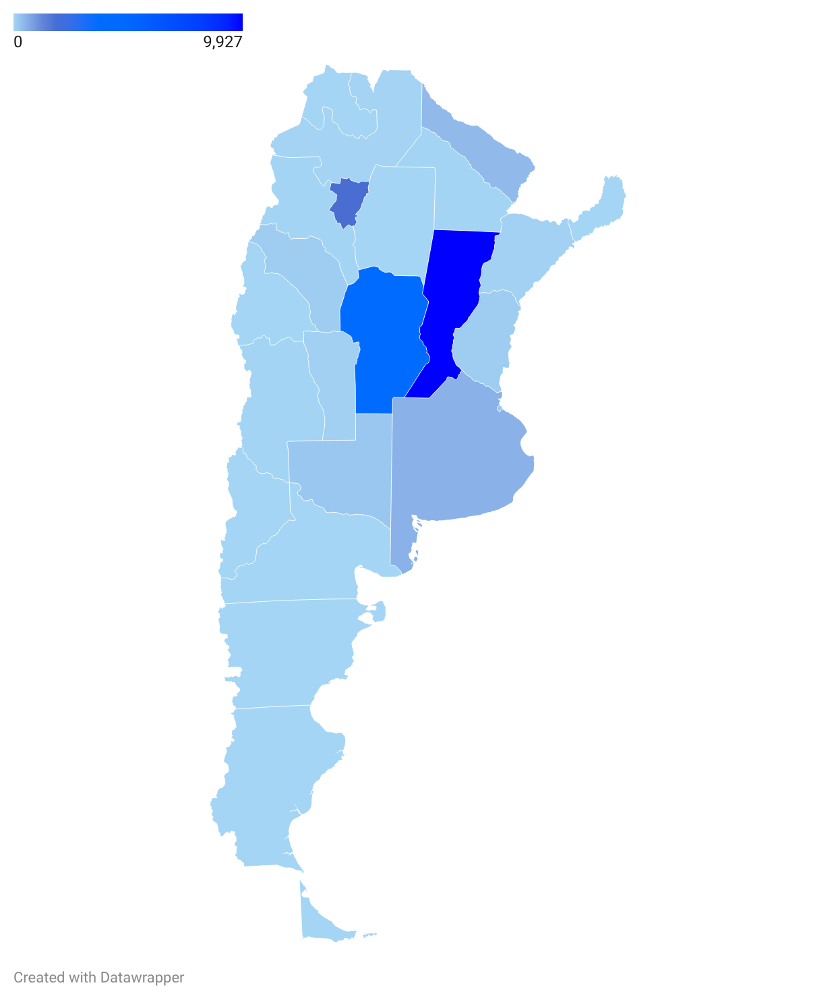
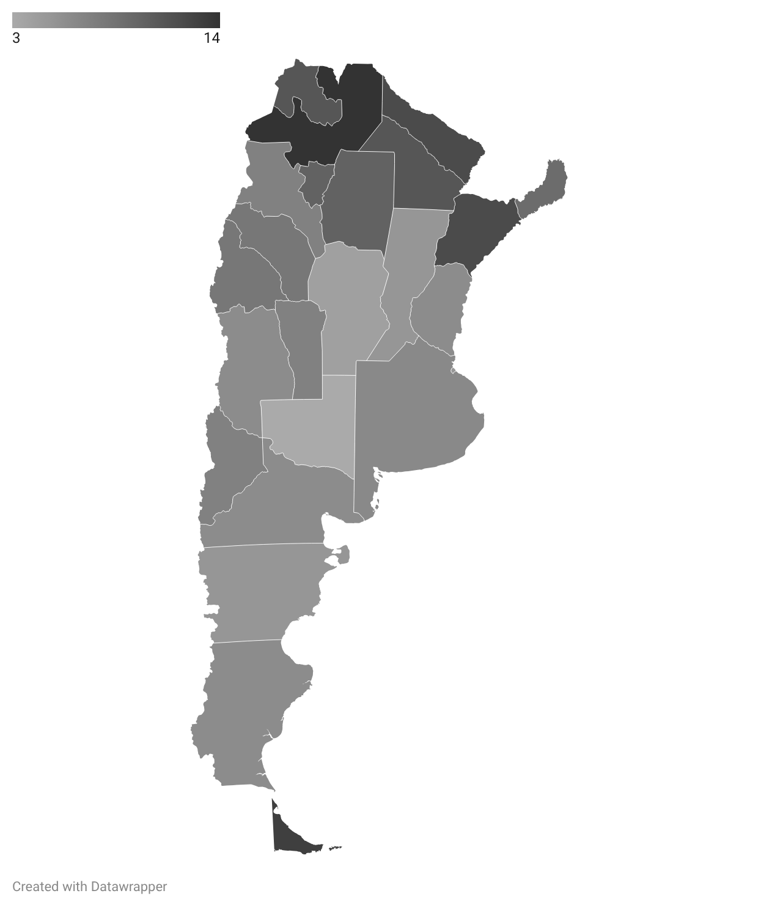

El mapa de la fiebre
Cuando el dengue pica en la desigualdad.
"El dolor empieza detrás de los ojos, como si te estuvieran clavando dos agujas desde adentro. Después baja a las articulaciones. Te juro que sentís que te molieron a palos. Pero lo peor no es la fiebre, lo peor es la culpa. Porque cuando viene el de la municipalidad a fumigar y te dice que tenés que descacharrar, vos lo mirás y no sabés cómo explicarle que no juntás agua en baldes por sucia o por dejada. Juntamos agua en los tachos azules porque acá, a las diez de la mañana, abrís la canilla y solo escupe aire".
Carmen tiene 42 años, vive en un barrio de calles de tierra en las afueras de Las Breñas, en el interior del Chaco, y lleva cinco días en cama. Su hijo menor, de nueve, empezó con los mismos síntomas ayer. En su cuadra, atravesada por zanjones a cielo abierto, casi no hay casa que no tenga o haya tenido un familiar con dengue en las últimas semanas.
La historia de Carmen podría estar ocurriendo hoy en el conurbano bonaerense, en los barrios periféricos de Rosario o en Tucumán. No es un caso aisladp; es el retrato de un fracaso estructural a nivel país. Durante décadas, la Argentina se acostumbró a pensar en el dengue como una amenaza lejana, un problema del norte endémico o de países vecinos. Hoy, la realidad nos pasó por encima: el mosquito Aedes aegypti rompió la barrera del frío, se instaló en el centro del país y el mapa nacional de contagios es, antes que nada, un mapa de la desigualdad.
El fin del invierno y la nueva normalidad
El primer factor de esta tormenta perfecta es el clima. El calentamiento global alteró las reglas del juego en todo el territorio nacional. Los inviernos pampeanos y centrales ya no son lo suficientemente largos ni crudos como para cortar el ciclo reproductivo del vector.
Evolución de casos notificados por semanas epidemiológicas. El pico de 2024 triplica en volumen histórico y se sostiene durante meses fríos. Datos: Ministerio de Salud de la Nación.
Los datos epidemiológicos del Ministerio de Salud de los últimos años muestran cómo la curva de contagios, que antes caía en picada en abril, ahora se estira hasta bien entrado el invierno. El calor extremo y las lluvias anómalas convirtieron a gran parte de la Argentina en una incubadora a cielo abierto que funciona casi todo el año.
La geografía de la picadura
Pero el mosquito no pica igual en todos lados. Si bien el Aedes aegypti tiene un vuelo corto y urbano, su impacto social es profundamente asimétrico. El discurso sanitario oficial suele insistir en responsabilizar al vecino: "dé vuelta los recipientes, limpie su patio, use repelente". Una narrativa que choca de frente con la realidad de los barrios populares del país.
¿Cómo se le pide a una familia que vacíe sus reservas cuando la red de agua potable es deficiente y la presión no llega durante los días de calor? ¿Cómo se sostiene la compra de repelentes —cuyos precios en farmacias y supermercados se disparan a niveles prohibitivos ante cada brote— en hogares donde los ingresos apenas cubren la canasta básica alimentaria?


Activá las capas superiores para cruzar los datos.
Cuando superponemos el mapa de calor de los contagios nacionales con los datos del INDEC sobre Necesidades Básicas Insatisfechas (NBI), la correlación es brutal. Los focos más rojos de la epidemia coinciden milimétricamente con las zonas donde faltan cloacas, donde el asfalto no llegó y donde el Estado solo aparece para fumigar cuando el brote ya es incontrolable.
El colapso en la sala de espera
"Para cuando logré que me atendieran en la salita, ya no daba más", sigue contando Carmen. "Había gente sentada en el piso, madres con los pibes volando de fiebre. Te dan paracetamol, te dicen que tomes mucha agua y que vuelvas a tu casa. Pero yo vuelvo a mi casa y el zanjón de la esquina sigue lleno de agua estancada. El mosquito sigue ahí".
El dengue nos obliga a mirar la Argentina que muchas veces se intenta tapar. Nos demuestra que las crisis sanitarias no se resuelven solo en los hospitales ni con campañas en redes sociales, sino con infraestructura pública y urbanización. Mientras el acceso al agua potable, al saneamiento y a una vivienda digna sigan siendo un privilegio y no un derecho garantizado en todo el país, el peaje de esta nueva normalidad climática lo seguirán pagando los mismos de siempre: con su salud, y en la sala de espera de un hospital colapsado.